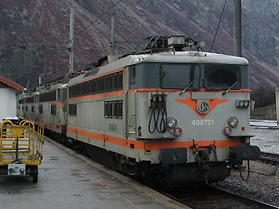
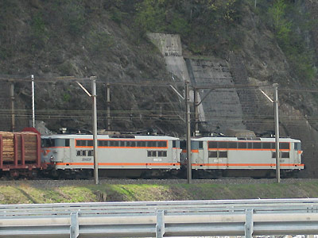

Ferrovia - 03 Juin 2012
BB 8700
Les BB 8700 sont des BB 8500 à petites cabines modifiées en 2001 et utilisées en unités multiples indéformables pour la pousse en Maurienne.
En raison de l'inconfort de leurs cabines et de leur suspension, les BB 8500 des deux premières sous-série étaient limitées au début des années 2000 à des parcours inférieurs à 150 km. 20 machines ont alors été modifiées pour former des unités multiples doubles (12 BB 8500 et 8 BB 88500).
L'agrandissement partiel d'une cabine a permis d'installer un fauteuil de conduite moderne en place du tabouret. Les cabines situées à l'intérieur des UM ainsi formées n'ont pas été modifiées.
Les 8700 n'ont pas duré longtemps puisque les dernières machines furent radiées en décembre 2005. Le plan Fret poussant prématurément toutes les anciennes séries de locomotives à la retraite.
Quelques données techniques
Constructeur : Alstom
Tension d'alimentation : continu 1,5 kV
Chaîne de traction : Banc rhéostatique
Motorisation : 1 moteur par bogie, double rapport d'engrenage, transmission par anneau dansant.
Puissance totale : 2940 kW
Aptitude à l'UM et à la réversibilité
Longueur : 14,70m ou 14,94m
Masse : 78,3t ou 79,5t
Pantographes: 2 AM18B
Pour plus d'info :
La fiche BB 8700 sur Wikipedia
Fiche technique des Danseuses de Florent Brisou
L'inventaire des BB 8700 sur Trains du Sud-Ouest

Les BB 8721 et 8786 au repos à St Jean de Maurienne (07/04/2004)

Les BB 8735 et 8771 en plein effort poussent un train d'autos et de bois tiré par une CC6500 vers Modane - Orelle (24/04/2004)